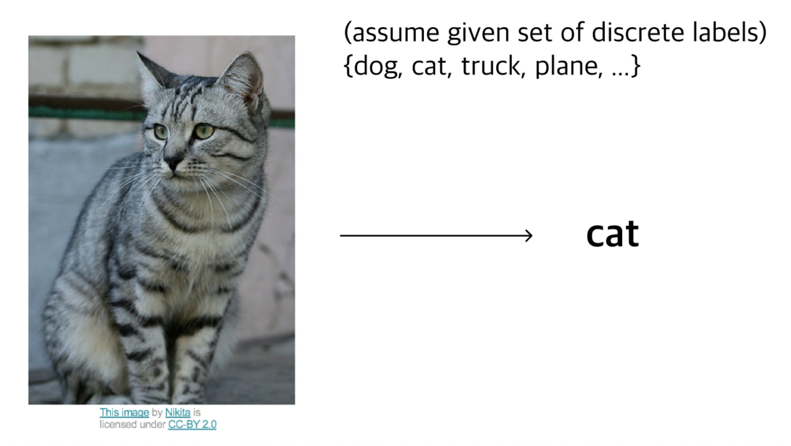
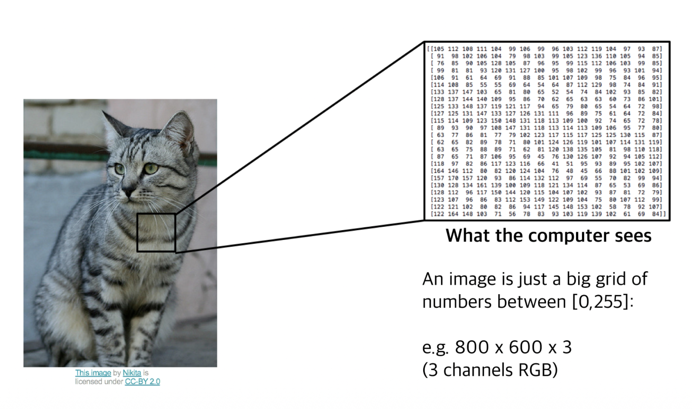
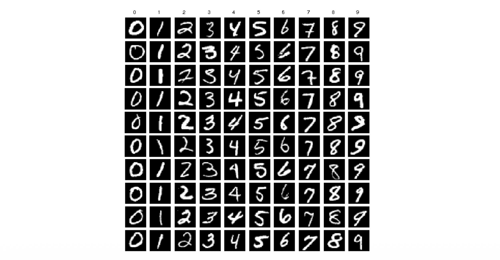
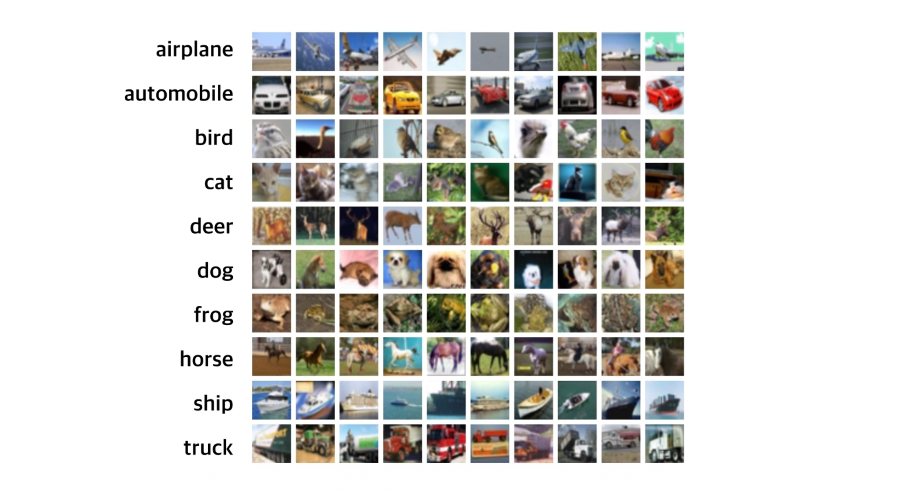
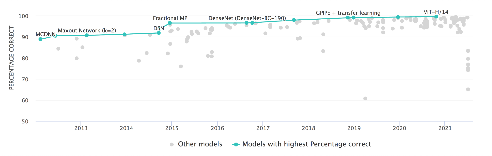
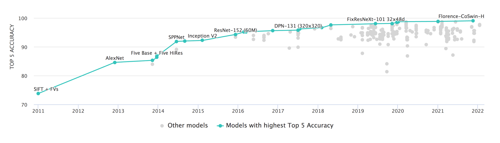

1. Introduction
본 포스트는 서울대학교 “Basics of Deep Learning” 강의(M2177.0043)의 Lecture 2 내용 중 앞부분인 이미지 분류(Image Classification)의 기초 개념과 주요 데이터셋에 대해 정리한 것이다.
딥러닝, 특히 컴퓨터 비전(Computer Vision) 분야에서 가장 기본이 되는 태스크(Task)는 바로 분류(Classification)이다. 본 강의에서는 기계가 이미지를 어떻게 인식하는지, 그리고 인간의 인식 체계와 어떤 차이(Gap)가 있는지 살펴보고, 이를 평가하기 위한 표준 데이터셋들의 발전 과정을 다룬다.
2. Image Classification Problem
2.1. 문제 정의 (Problem Definition)
- 이미지 분류란 입력된 이미지에 대해 미리 정의된 이산적인(discrete) 라벨 집합에서 하나의 정답 라벨을 할당하는 작업을 말한다.
- 이를 수식적으로 표현하면 다음과 같다.
- 입력 이미지 \(X\)가 주어졌을 때, 분류 모델 \(f\)는 정의된 라벨 집합 \(Y = \{y_1, y_2, \dots, y_K\}\) 중 하나를 출력해야 한다.
- 예를 들어, 아래의 고양이 사진을 입력받았을 때, 컴퓨터는 이를 ’cat’이라는 라벨로 분류해내야 한다.

2.2. 컴퓨터가 보는 세상 (What the computer sees)
사람은 직관적으로 이미지를 객체(Object) 단위로 인식하지만, 컴퓨터에게 이미지는 거대한 숫자들의 그리드(Grid of numbers)일 뿐이다.
디지털 이미지는 일반적으로 다음과 같은 3차원 텐서(Tensor)로 표현된다. \[ \text{Image} \in \mathbb{R}^{H \times W \times C} \]
- 여기서 각 차원은 다음을 의미한다.
- \(H\): 높이(Height)
- \(W\): 너비(Width)
- \(C\): 채널(Channel, RGB의 경우 3)
- 여기서 각 차원은 다음을 의미한다.
각 픽셀(Pixel)은 정수 값을 가지며, 보통 8-bit 이미지의 경우 \([0, 255]\) 사이의 값을 가진다. \[ \text{Pixel Value} \in \{0, 1, \dots, 255\} \]
예를 들어, \(800 \times 600\) 해상도의 컬러 이미지는 컴퓨터 내부에서 다음과 같은 크기의 배열로 처리된다. \[ 800 \times 600 \times 3 = 1,440,000 \text{ numbers} \]

2.3. Semantic Gap 및 도전 과제
이미지 분류가 어려운 핵심적인 이유는 Semantic Gap 때문이다.
Semantic Gap: 픽셀 값들의 변화와 인간이 인지하는 의미(Semantic meaning) 사이의 괴리.
고양이 사진의 픽셀 값을 조금만 바꾸거나, 카메라 각도를 살짝만 틀어도 픽셀 데이터의 분포는 완전히 달라진다. 하지만 인간은 여전히 이를 ’고양이’로 인식한다.
컴퓨터 비전 알고리즘은 이러한 격차를 극복하고 다음과 같은 다양한 변형(Variation)에 강건(Robust)해야 한다.
- Viewpoint variation: 카메라의 시점에 따라 객체가 다르게 보임
- Illumination: 조명 조건에 따른 픽셀 값 변화
- Deformation: 객체의 형태 변형 (예: 앉아있는 고양이 vs 누워있는 고양이)
- Occlusion: 객체의 일부가 가려짐
- Background clutter: 배경과 객체의 색상이나 패턴이 유사하여 구분이 어려움
- Intraclass variation: 같은 클래스(예: 의자) 내에서도 다양한 생김새가 존재
3. Standard Datasets (Benchmarks)
- 머신러닝 알고리즘의 성능을 객관적으로 비교 평가하기 위해서는 표준화된 데이터셋이 필수적이다. 딥러닝의 발전사는 데이터셋의 발전사와 궤를 같이한다.
3.1. MNIST
- 가장 고전적인 데이터셋으로, 손글씨 숫자 분류를 위해 사용된다.
- Content: 0부터 9까지의 필기체 숫자 (10 Classes)
- Dimension: \(28 \times 28\) Grayscale (흑백)
- Size: Training 50,000장 / Test 10,000장

3.2. CIFAR-10
- 작은 크기의 컬러 이미지 데이터셋으로, 일반적인 객체 인식을 위해 널리 사용된다.
- Content: 비행기, 자동차, 새, 고양이, 사슴, 개, 개구리, 말, 배, 트럭 (10 Classes)
- Dimension: \(32 \times 32 \times 3\) Color (RGB)
- Size: Training 50,000장 / Test 10,000장

CIFAR-10에서의 성능 발전
- CIFAR-10 데이터셋에 대한 분류 정확도는 딥러닝 모델의 발전과 함께 급격히 상승했다.
- 2013~2015년: Maxout Network, Fractional MP 등의 모델들이 등장하며 정확도 90% 돌파
- 2017년 이후: DenseNet, GPIPE 등을 거치며 인간의 인식 능력을 상회
- 최신(ViT-H/14 등): 99% 이상의 정확도에 도달하며 사실상 포화 상태(Saturated)에 이름

3.3. ImageNet (ILSVRC)
- 현대 딥러닝, 특히 Convolutional Neural Network(CNN)의 붐을 일으킨 대규모 데이터셋이다.
- Content: 매우 다양한 실제 사물 및 동물 사진
- Classes: 1,000개 (WordNet 계층 구조 기반)
- Size: Training ~1.2 Million장 / Test 100,000장
- Resolution: 고해상도 (모델 입력 시 보통 \(224 \times 224\) 등으로 리사이징하여 사용)
ImageNet Challenge의 의미
- ImageNet Large Scale Visual Recognition Challenge (ILSVRC)의 Top-5 Error Rate(상위 5개 예측 중 정답이 없을 확률) 변화는 딥러닝 역사의 이정표와 같다.
- Human Performance: 훈련된 인간 전문가의 오차율은 약 5.1%로 알려져 있다.
- AlexNet (2012): 딥러닝 기반 모델의 가능성을 증명하며 오차율을 획기적으로 낮춤.
- ResNet (2015): 인간의 성능(5.1%)을 처음으로 넘어섬 (Super-human performance).
- Current SOTA: Top-5 Accuracy가 99% 이상(Error < 1%)에 도달함 (Florence, CoSwin 등).
